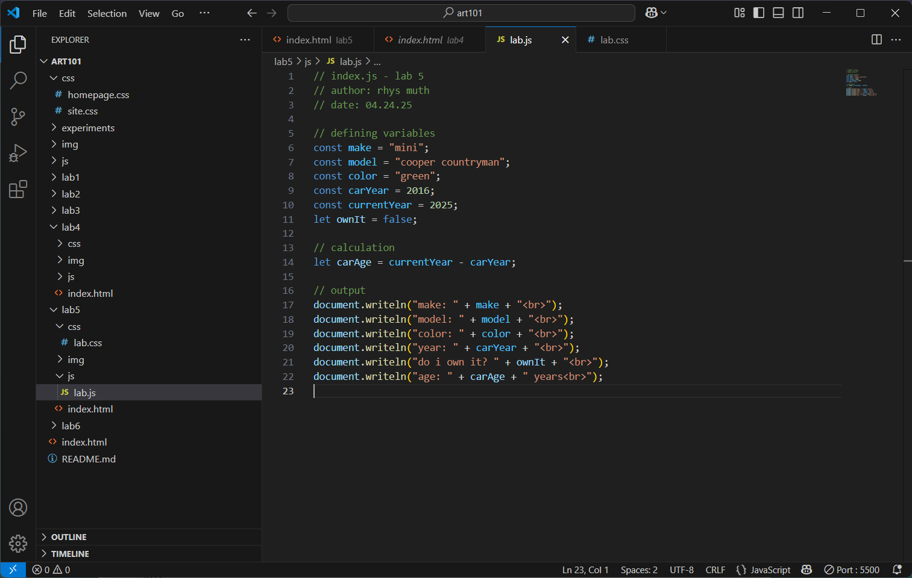

lab 5 - data types & variables
challenge
the goal for this lab was to dip our toes into javascript and write some simple data and variables into our webpage.
problems
i had a brief issue with my js script not wanting to show up on my page when i tested it locally. after talking to my partner and copy-pasting my code into wesbot, i realized that despite reading the instructions clarifying the difference between writeIN and writeLN, i still somehow managed to get them mixed around in my head and write the wrong one lol.
reflection
aside from my brief spelling stumble, i didn't have much trouble with this! i was able to use my resources, aka my partner and wesbot, to figure out my problems, and everything ran smoothly and easily after that!
results
here's the script output!
image: js code in console
image: js code in vs code